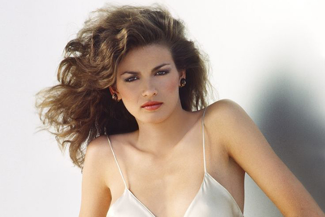
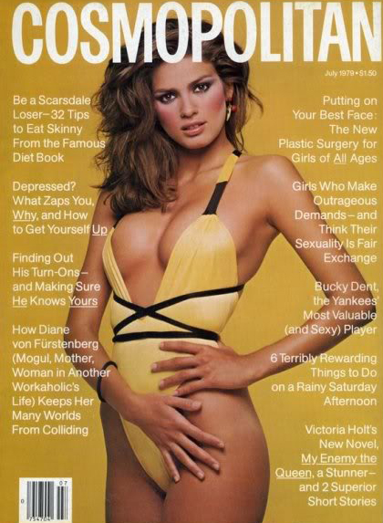
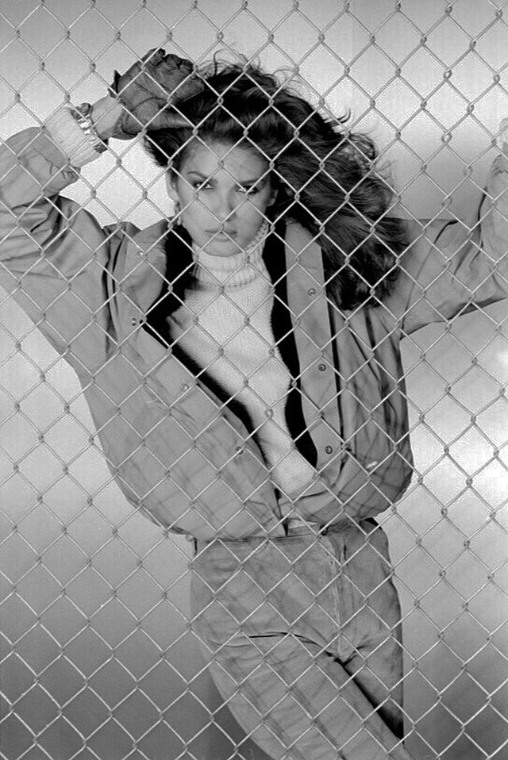
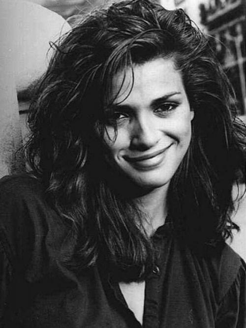
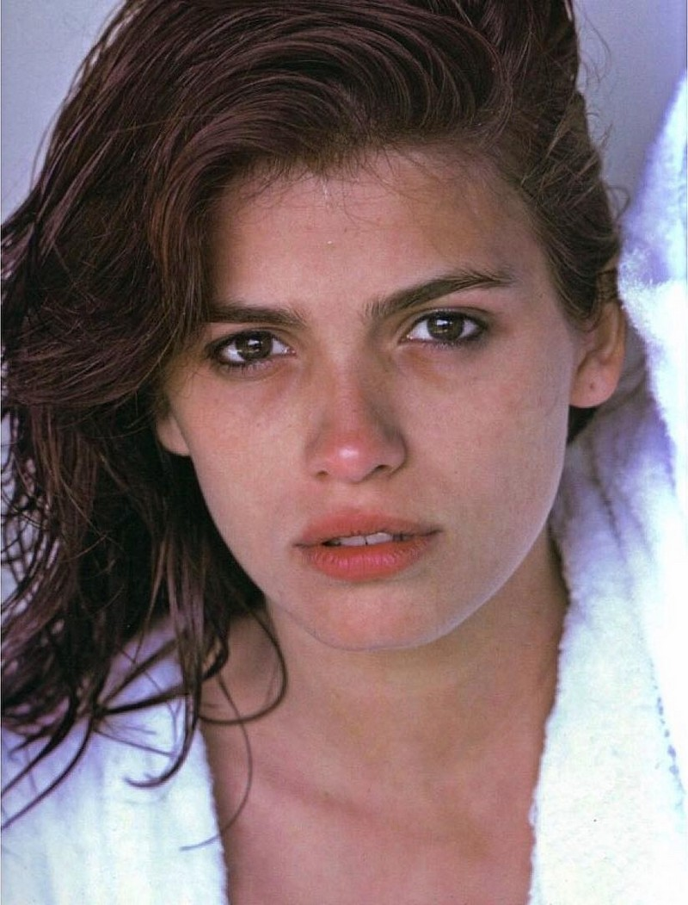
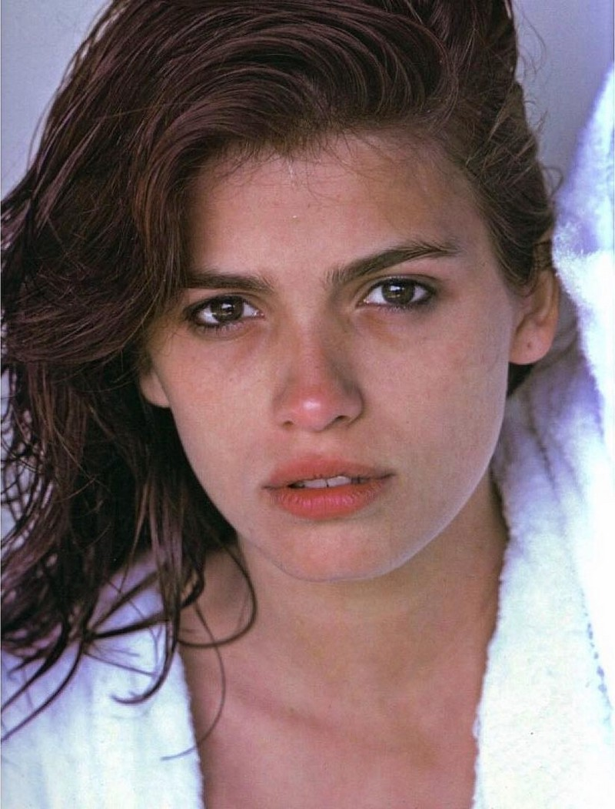
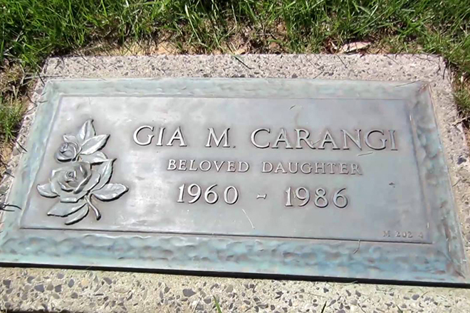

В Нью-Йорке Джиа познакомилась с Вильгельминой Купер, в прошлом моделью, владелицей собственного модельного агентства. Начинающую модель начали приглашать на съемки. Сначала заказы были небольшими, однако вскоре лицо Джии стало узнаваемым, а сама модель стала весьма востребованной. А потрясающая способность девушки перевоплощаться в любой образ, будь то роковая красотка или невинная простушка, добавляла модели привлекательности в глазах работодателей.
 Карьера девушки стремительно шла вверх, с моделью мечтали поработать именитые модельеры и фотографы, а фото Джии Каранджи украшали многочисленные обложки журналов и рекламных проспектов. В 1978-м девушке предложили сняться обнаженной. Фотограф Крис Вон Уондженхеим предвидел скандальную известность этих снимков. Джиа приняла столь смелое предложение, еще раз доказав, что готова на любые образы и перевоплощения. Визажистом в этой фотосессии стала Синди Линтер. Снимки удались на славу: вскоре изображения нагой Каранджи, стоящей около забора, наделали много шума, взбудоражив общественность и повернув развитие модельного бизнеса на 360 градусов. Уже спустя год, в 1979-м, Джиа снялась для обложек британского, французского и американского Vogue, а также для американского журнала «Космополитен». Фотографии для «Космо», где девушка снялась в оригинальном желтом купальнике, позже назовут лучшими снимками модели.  Завоевав славу и популярность, Джиа Каранджи стала соглашаться исключительно на те съемки, которые казались интересными. Более того, девушка порой проявляла характер, отказываясь от фотосессий, если ей не нравились одежда, макияж или прическа. К сожалению, столь яркая карьера Джии Каранджи закончилась, едва успев начаться.  После работы девушка часто посещала клубы и бары Нью-Йорка, славившиеся свободными нравами и доступными наркотиками. Сначала модель попробовала кокаин, показавшийся ей легкой шалостью и способом расслабиться и отдохнуть. Затем, в 1980-м, перешла на героин. Это случилось сразу после смерти ее подруги и наставницы Вильгельмины Купер. Девушке хотелось отвлечься от скорби по близкому человеку, и героин помогал в этом как нельзя лучше.
Наверх Друзья и родственники модели предприняли попытку спасти Джию, девушка даже проходила курс
реабилитации в филадельфийской клинике. Казалось, еще не все потеряно. Однако, окончив
лечение,
Джиа снова связалась с компанией, употреблявшей наркотики. Модель арестовывали за вождение
машины в нетрезвом виде, также девушка крала деньги из дома матери, чтобы купить новую дозу.
В
1981-м Джиа снова попыталась пройти лечение в наркологической клинике, но новость о гибели
ее
друга, фотографа Криса Вон Уондженхеима, выбила модель из колеи и толкнула обратно в пучину
наркотического забытья.

Последнюю попытку вернуться к нормальной жизни Джиа предприняла в 1984 году. Под давлением
близких девушка шесть месяцев провела на лечении в клинике. В этот момент от огромных
гонораров
модели не осталось ни доллара, и Джии Каранджи пришлось жить на пособие штата. Выписавшись
из
клиники, девушка, на первый взгляд, пришла в себя. Джиа устроилась на работу в супермаркет,
даже
записалась на курсы в колледж. Но силы воли бывшей модели хватило на три месяца — потом Джиа
исчезла, вероятно, вернувшись к друзьям по игле.
В 1986 году стало известно, что Джиа Каранджи попала в больницу. У девушки подозревали
сильнейшую пневмонию. К тому моменту кожа Джии сплошь покрылась язвами и рубцами, а также
следами уколов. Через некоторое время Каранджи выписали, однако спустя месяц девушку снова
госпитализировали — и снова с пневмонией. Тогда стало понятно, что надо искать причины
болезни.
Правда оказалась страшной: Джии диагностировали СПИД. Страшная болезнь разъедала Джию
Каранджи
изнутри. После этого девушка прожила только полгода.
Наверх
Друзья и родственники модели предприняли попытку спасти Джию, девушка даже проходила курс
реабилитации в филадельфийской клинике. Казалось, еще не все потеряно. Однако, окончив
лечение,
Джиа снова связалась с компанией, употреблявшей наркотики. Модель арестовывали за вождение
машины в нетрезвом виде, также девушка крала деньги из дома матери, чтобы купить новую дозу.
В
1981-м Джиа снова попыталась пройти лечение в наркологической клинике, но новость о гибели
ее
друга, фотографа Криса Вон Уондженхеима, выбила модель из колеи и толкнула обратно в пучину
наркотического забытья.

Последнюю попытку вернуться к нормальной жизни Джиа предприняла в 1984 году. Под давлением
близких девушка шесть месяцев провела на лечении в клинике. В этот момент от огромных
гонораров
модели не осталось ни доллара, и Джии Каранджи пришлось жить на пособие штата. Выписавшись
из
клиники, девушка, на первый взгляд, пришла в себя. Джиа устроилась на работу в супермаркет,
даже
записалась на курсы в колледж. Но силы воли бывшей модели хватило на три месяца — потом Джиа
исчезла, вероятно, вернувшись к друзьям по игле.
В 1986 году стало известно, что Джиа Каранджи попала в больницу. У девушки подозревали
сильнейшую пневмонию. К тому моменту кожа Джии сплошь покрылась язвами и рубцами, а также
следами уколов. Через некоторое время Каранджи выписали, однако спустя месяц девушку снова
госпитализировали — и снова с пневмонией. Тогда стало понятно, что надо искать причины
болезни.
Правда оказалась страшной: Джии диагностировали СПИД. Страшная болезнь разъедала Джию
Каранджи
изнутри. После этого девушка прожила только полгода.
Наверх
"Она искала чью-то любовь, однажды Джиа пришла в мой дом посреди ночи, и я впустила ее, а она хотела только, чтобы ее кто-то обнял. Это было очень грустно"
Возможно, тяга к женскому обществу, а также попытка забыться в наркотическом опьянении стали следствием недостатка внимания матери в раннем возрасте. Горькая правда заключается в том, что, только умирая, девушка обрела то, о чем мечтала всю жизнь, - внимание матери. Кэтлин Каранджи будет до последнего рядом с дочерью, не позволяя никому ухаживать за ней. За месяц до смерти Джию Каранджи перевели в больничный изолятор, а 18 ноября 1986 года девушки не стало.  Смерть Джии Каранджи оказалась неожиданной для многих: болезнь и зависимость бывшей модели стараниями матери не афишировались."Те годы были сумасшедшими, — вспоминала позже мать Джии. — Я говорила моему бывшему мужу, что он должен быть готов к любым новостям, потому что она была способна на что угодно. Люди в таком состоянии сделают все что угодно ради наркотиков. Воровство, даже убийство. Я понимала, что в любой день могу получить письмо о том, что моя дочь мертва"
Похороны Джии Каранджи прошли спустя три дня после смерти девушки. Джию хоронили в закрытом гробу - настолько болезнь изуродовала лицо и тело девушки. Панихида прошла в кругу самых близких людей: на тот момент признаться, что Джиа Каранджи умерла от СПИДа, значило покрыть позором ее имя.Фильм 1998 г. "Джиа"
жанр: драма, мелодрама, биография
слоган: «Слишком красива, чтобы умереть. Слишком неистова, чтобы жить»
возраст: 18+
время: 120 мин.
в ролях: Анджелина Джоли (Джиа), Элизабет Митчелл (Линда), Мила Кунис (Джиа в молодости)
Основанная на реальных событиях история всемирно известной супер-модели по имени Джиа Мари Каранджи. В конце семидесятых, эту женщину называли королевой мирового подиума. До этого она была обыкновенной девушкой, работавшей мойщицей посуды в заброшенном кафе на окраинах города.
Спустя годы после смерти Джии Каранджи выйдет фильм под названием «Джиа», рассказывающий о судьбе этой талантливой девушки, жизнь которой оказалась так нелепо сломана. Главную роль в картине сыграла Анджелина Джоли, признавшаяся, что биография Джии слишком похожа на ее собственную. В фильме откровенно показаны отношения Джии и Линды (девушки, созданной по образу визажиста и подруги Джии — Синди Линтер). Заканчивается картина цитатой из дневника Джии Каранджи, который так и не был опубликован полностью:
"Жизнь и смерть. Энергия и покой. Если я остановилась сегодня, это все же того стоило, и даже ошибки, которые я сделала и которые я бы исправила, если бы могла, боль, что сжигала меня и оставила шрамы в моей душе, — это все стоило того, чтобы мне позволили идти туда, куда я шла: к этому аду на земле, к этому раю на земле..."